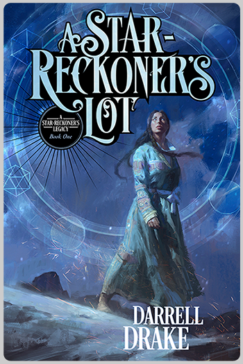
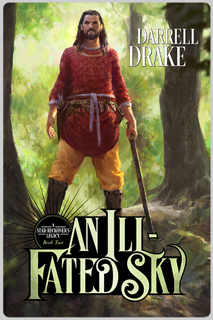
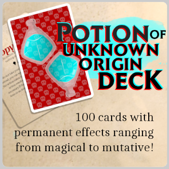
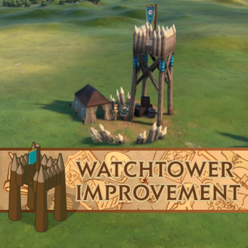

A STAR-RECKONER'S LOT
A Reddit r/Fantasy 2017 Underread/Underrated Novel and SPFBO 2017 Semi-Finalist
Ashtadukht is a star-reckoner. The worst there's ever been.
She commands the might of the constellations... though her magic is as unpredictable as the die rolls that decide its fate. But star-reckoners are humanity's first defense against divs, so if Ashtadukht is to fulfill her duty, she must use every trick at her disposal—risks be damned.
An excuse. A lie she tells herself. All that remains of a life she should have had. She travels the empire to hunt down the div that brought her world to ruin. The longer her pursuit, the more her memories threaten to consume her. The darker her obsession becomes.
Every spell is a catastrophe waiting to happen, every div a tale of its own, every tale a thread in her tapestry of vengeance. This is the story of her path... a warning to those who would follow in her footsteps.
Ashtadukht is a star-reckoner. The worst there's ever been. Hers is no hero's journey.
I'm afraid I'll overuse the word imaginative if I tried to describe what Drake has done here in the depth I want to. You haven't read a fantasy novel like this one before — almost certainly, anyway — but you should. - The Irresponsible Reader

AN ILL-FATED SKY
Tirdad will forsake honour. With his sword, or on it.
All his life, Tirdad has been an honourable man. Right until the point where honour made him run his sword through his beloved cousin, ending her rebellion.
Wracked with guilt, Tirdad is ready to forsake his honour, forget the past, and forge a new path ahead, but in a cruel twist of fate, Tirdad becomes bonded to the blade that made him a kinslayer. Cursed by the sword, Tirdad inherits both his cousin's planet-reckoning powers and the conspiracy against her that forced her into rebellion.
The celestial powers are now his to command against those same enemies, if he dares risk the mayhem that inevitably follows, but he may not have any choice if he wants to unravel the plot that destroyed his House. Divs, yazatas, star-reckoners, Tirdad will face them all as he travels across Iran, sowing chaos and reaping curse.
Host to some of the most believable, enigmatic and intriguing characters I have come across since Robin Hobb's Fitz and the Fool. - The Tome & Tankard Inn

TABLETOP CONTENT
I translate the custom content I design for my campaigns into polished content for users of Virtual Tabletop software like Roll20 and Fantasy Grounds. You can also find my content on DM's Guild.
Potion of Unknown Origin: Contains 100 cards with permanent effects ranging from magical to mutative—all of which introduce a new dimension of the game to you and your players. Use it to supplement your wild magic table, use it as a tempting treasure, use it as a risk vs. reward scenario. The potion only wishes to be imbibed.
Trick or Treat Deck: Treat yourself, trick your players. ...Then treat your players. The Trick or Treat Deck contains 28 Halloween-themed encounter cards designed to bring variety to your tabletop. Players find themselves dealing with odd vendors such as the Pail Rider, strange locations known only to the sages among confectioners, and of course, what's Halloween without monsters? What's more, several encounters have outcomes that affect one another. This deck introduces an undead familiar option, a full-featured undead player-character race, 24 unique items, and three recruitable NPCs. Please note that this deck contains a number of light-hearted encounters—it isn't all doom, and gloom.
Chiseled Token Frames: Presentation matters. A character could have the sweetest, most accurate portrait, and it isn't going to mean much if it's wrapped in the wrong frame. That's the stance I take to virtual tabletop, as both a player and DM, and why I created these sleek but not overly elaborate token frames.
